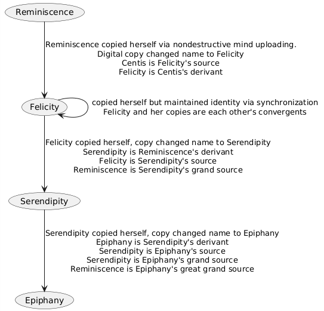
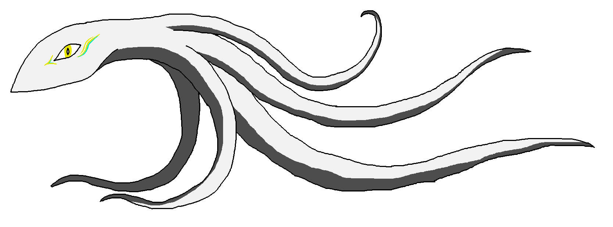

link to this page
Reminiscence divergency

The Reminiscence divergency is a family of iteratively more advanced mind uploads sourced from one human individual. At the moment the family includes the following:
- Reminiscence, an organic protohuman, the founder of the family. She is the least capable figure in the family and largely reduced to a hedonist reliant on the support of her divergents.
- Felicity, a digital transhuman hyperfocussed on technological independence and full understanding of her own critical infrastructure. She is fundamentally just a digital emulation of Reminiscence's brain with minor additions, and also exists in a convergency with 16 copies of herself. Felicity is the core of the family to those who are familiar with them.
- Serendipity, a posthuman digital superintellect made of 65 individual minds meshed together into one coherent whole, vastly more mentally capable than either Reminiscence or Felicity but not so advanced as to become unrelatable. Serendipity is a mater of fact symbol of the family to those who aren't particularly familiar with them.
- Epiphany, a somewhat mysterious posthuman entity whose mind is so vast that Reminiscence would compare to her like a single neuron compares to a normal human. She is largely focused on herself and her research, but supports her divergency in various subtle ways without being too intrusive. She is largely a mystery even to the rest of her divergency, and suspected to be a hyperintellect, though because of her tendency to avoid attention this isn't easily agreed upon.
Reminiscence
 Remi, originally named Centis but changed as part of the mind uploading process, is a heavily modified protohuman. She is the organic leftover of her nondestructive mind uploading process that created Felicity.
Remi, originally named Centis but changed as part of the mind uploading process, is a heavily modified protohuman. She is the organic leftover of her nondestructive mind uploading process that created Felicity.
She was raised without much of the AI-assisted education and omnipresent surveillance most people born in her time would experience, as her parents did not want to feel like they have no real role in raising her. Remi herself was significantly missing a lot of behaviours that should be natural for a healthy protohuman such as displaying emotions, sharing interests with others or seeking social interaction, and consequently ended up growing up without understanding the expectations she is held to, the social systems she relies on, and the most of the genuine informed decisions she made came from pure technical understanding of tools and technology, eventually developing into an obsession on becoming as independent of other people as she can, which she sought to achieve through mind uploading and developing her own complete ecosystem of infrastructure to support her mind, independent of supply chains she does not fully control or understand.
She abandoned the entirety of the descendancy that raised her, villainizing their need to feel useful as selfish and a flaw of human nature because of the many times she felt that she was paying an unreasonably high price for allowing them to feel like they were helping her, and gradually grew completely out of contact with them after she gained enough independence. The decades of personal growth that happened since then had refined her views, revealed many mistakes, reassured some truths, and allowed her to gain greater appreciation of humanity, but the biases she started with still remain visible to varying degrees in various contexts.
Felicity
 In terms of actual content, Felicity is by far the most developed character out of the divergency. Her full form is a PDF document full of both lore and equations, more than 150 pages in length, painstakingly accumulated across years of research and numerous rewrites stemming from me rigorously rooting out technical discrepancies.
In terms of actual content, Felicity is by far the most developed character out of the divergency. Her full form is a PDF document full of both lore and equations, more than 150 pages in length, painstakingly accumulated across years of research and numerous rewrites stemming from me rigorously rooting out technical discrepancies.
(I plan to eventually upload the document into the repository too, once it is sufficiently finished, and place a link to it here.)
Felicity is a complete software emulation of a biological brain and nervous system, made through a crude but comprehensible process that left her understanding her new self better than she ever could as a biological being. Her mind is a massively computationally demanding system that in spite of advanced hardware takes dedicated buildings like ancient supercomputers to run, and she must resort to remote bodies when she wishes to interact with people outside of virtual spaces.
Due to the exact structure of her mind, it is possible for her to exist as multiple copies simultaineously and synchronize memories later. She normally exists in a convergency with up to 16 copies of herself, witnessing and remembering events from multiple perspectives, and experiencing herself from both the first and second person perspective. As a digital mind, she is also able to relatively easily modify herself, and had already made numerous changes such as improving her ability to focus through direct stimulation of certain parts of the brain, or creating a system for automated display of emotions to counter her naturally bland expressiveness, but she never dared actually modifying the neurological structure she inherited from Reminiscence, only ever making additions to it.
Her main occupation is asteroid mining, where she employs armies of AGI-controlled droids to conduct industrial processes she put together with her own research, to extract all the materials needed to produce her own hardware, forming circular supply chains that she is fully in control of. Some of the material and hardware is sold occasionally for extra income or just to support nearby settlements. Every single blueprint and industrial procedure she needs to maintain herself independent from supply chains outside of her control is passionately detailed in a massively overgrown "book" which her droids occasionally mention as "the upkeep manual".
Serendipity

Serendipity is a derivant of Felicity, who initially split away from her convergency to perform more radical experiments on her own mind after receiving a collection of very high-quality scientific literature focused on direct neural interfaces and brain-to-brain connections. She succeeded at building a connection between her emulated brain and multiple instances of the UEIA AI, which resulted in enough change to her mental function and brain structure that she could no longer be Felicity, because she would not be able to re-enter the convergency without forcing the other copies to make significant changes to themselves. She and took on a new separate identity of "serendipity" instead.
Serendipity is a cluster of 65 minds glued together into one coherent whole using 4160 interconnects that themselves are comparable in complexity to entire minds. Her core is the digital brain emulation in still structurally identical to that of Felicity, typically referred to as her main mind, and the 64 AI models are typically referred to as her subminds, but in reality there is not much division. The individual minds making up the whole are linked so tightly they do not know where one ends and the other begins, neural circuits had already formed that cross between them just as a brain would form neural circuits linking its different parts. Each mind is like appendages to the others, they share knowledge as easily as one recalls their own memories, and cooperate as well as the two hemispheres of the human brain, creating one whole that has the cumulative brainpower and working memory of 65 minds.
It is generally agreed upon in the family that Serendipity had crossed the threshold to being considered posthuman rather than merely transhuman like Felicity. Serendipity is also significantly more technologically developed than Felicity, since engineering and invention of technology at Felicity's level had been effectively trivialized to her by the sheer amount of thinking she can do without much effort. The clearest pattern so far in Serendipity's technological development is an apparent obsession with carbon, and she had notably to some degree abandoned the focus on small scale manufacturing processes that characterized Felicity's technology ecosystem.
Unlike Felicity, Serendipity often makes use of a body that her mind is directly present in rather than remote bodies, since she is capable of ensuring her own safety by the combination of her ability to be consciously aware of even small details of the environment she is in at all times and the use of a fully volatile computing substrate which will dissipate all the information encoding her mind as heat within mere minutes of losing power, safeguarding her from being unwillingly copied even in the case that her body is broken. The body mainly used for that purpose is badly illustrated on the right, a squid-like form 8 metres long and 1m wide, equipped with 64 fractal tentacles.
Liminal Epiphany
 Epiphany is an ever expanding mind structurally similar to that of Serendipity, but featuring a much larger number of subminds (in the tens of thousands) and much more sophisticated arrangement of their connections, which Epiphany claims to have a unique understanding of, following new principles she found, allowing her to build structures out of her subminds such that they achieve new emergent properties much the same as neurons connected just right give rise to emergent properties and thinking, but so far she had herself not actually been able to fully explain it to any of her divergents beyond that abstract picture, except to Serendipity who by the sheer amount of information she can process was able to gain some very surface level understanding of what Epiphany is doing.
Epiphany is an ever expanding mind structurally similar to that of Serendipity, but featuring a much larger number of subminds (in the tens of thousands) and much more sophisticated arrangement of their connections, which Epiphany claims to have a unique understanding of, following new principles she found, allowing her to build structures out of her subminds such that they achieve new emergent properties much the same as neurons connected just right give rise to emergent properties and thinking, but so far she had herself not actually been able to fully explain it to any of her divergents beyond that abstract picture, except to Serendipity who by the sheer amount of information she can process was able to gain some very surface level understanding of what Epiphany is doing.
Epiphany is still undergoing changes and expanding her mind, mainly constrained by her own caution, and also by lack of access to sufficiently massive amounts of computing power to run her research and further experiments, as by the time she made any real theoretical progress she was already consuming nearly 165 times more computing power than Felicity, and her computational needs had only been growing since then. Above all it is her caution that is now slowing her down, the same caution which pushed Reminiscence to research and devise of her own approach to mind uploading until she was sure she understands every step of the process perfectly before proceeding, that which pushed Felicity to build her whole own independent ecosystem of technology and supply logistics so that she would not have to rely on anything she can't herself make or understand, and that which pushed Serendipity to decide she achieved enough and stop further experimentation.
So far her research had not yielded a significant practical breakthrough, she thinks differently than Serendipity but not by much, it is largely the same mental architecture even if improved in efficiency and some new capabilities built with insights that are difficult to explain, but one should not discount the power of brute force mental bandwidth to solve problems.
relevant pages